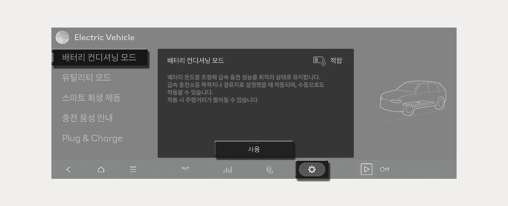
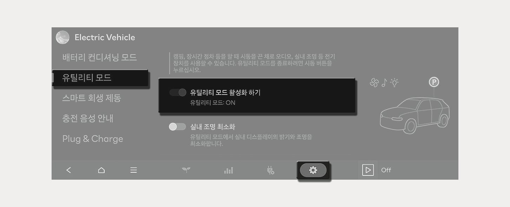
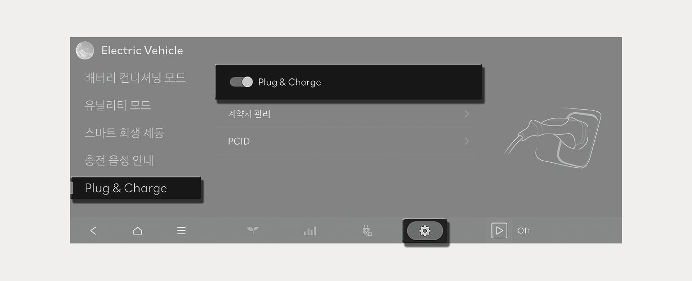
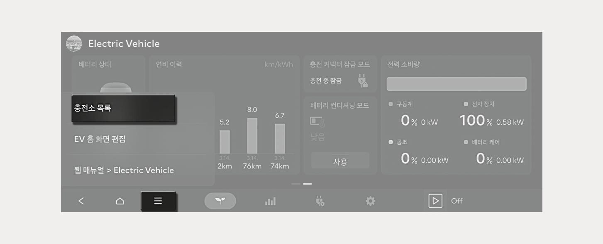
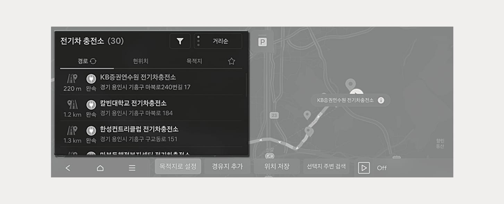

전기차(EV) 특화 기능 설정하기
EV 설정 화면에서 배터리 컨디셔닝 모드, 유틸리티 모드 등 전기차에 특화된 다양한 기능을 설정할 수 있습니다.
고전압 배터리의 온도가 높거나 낮아 배터리의 충전 및 방전 성능이 저하될 우려가 있는 경우, 배터리 컨디셔닝 기능을 수동으로 작동하거나 내비게이션 연동 기능을 활용하면 급속 충전 성능에 적합한 배터리 온도를 확보할 수 있습니다.
수동으로 작동하기
인포테인먼트 시스템 홈 화면에서 Electric Vehicle >
배터리 컨디셔닝 모드의 작동 상태는 인포테인먼트 시스템 화면에 표시되며, 인포테인먼트 시스템 화면에서 직접 켜거나 끌 수 있습니다.

1C_BatteryConditioning
내비게이션 연동으로 작동하기
내비게이션에서 급속 또는 초급속 충전소를 목적지나 경유지로 설정하면 배터리 컨디셔닝 기능이 충전소 도착 시간에 맞춰 고속 충전에 적합한 배터리 온도를 제공하므로, 혹서기나 혹한기에도 상온 수준의 급속 충전 성능을 유지할 수 있습니다.
배터리 컨디셔닝 기능을 사용할 때 다음 사항에 주의하십시오.
-
배터리 컨디셔닝 기능은 배터리 히터가 장착된 차량에서만 사용할 수 있습니다.
-
배터리 충전량이 적은 경우 주행 가능 거리 확보를 위해 배터리 컨디셔닝 기능이 작동하지 않을 수 있습니다. 또한, 배터리 온도가 이미 주행 및 충전에 적합한 경우 배터리 컨디셔닝 기능이 작동하지 않을 수 있습니다. 또한, 배터리 온도가 이미 급속 충전에 적합한 경우 배터리 컨디셔닝 기능이 작동하지 않을 수 있습니다.
-
배터리 온도를 조절하기 위해 고전압 배터리 에너지를 사용하므로 주행 가능 거리가 짧아질 수 있으며, 배터리가 적압한 온도에 도달하기까지 다소 시간이 소요될 수 있습니다.
-
블루링크 (Bluelink) 서비스에 가입한 경우, 마이현대 앱을 이용해 주차 중 차량의 배터리 컨디셔닝 기능을 원격으로 제어할 수 있습니다. 원격 제어 시에는 배터리 온도가 적합 범위에 도달하거나 30분 작동한 후 배터리 컨디셔닝 기능이 종료됩니다.
유틸리티 모드를 설정하면 12 V 보조 배터리 대신 고전압 배터리를 이용해 차량 내부의 시스템 장치를 사용할 수 있습니다.
-
유틸리티 모드 사용 중에는 차량을 주행할 수 없으며, 'P'(주차) 이외의 위치로 변속할 수 없습니다.
-
유틸리티 모드 사용 중에는 차량 내부의 모든 전기 장치를 사용할 수 있습니다.
-
유틸리티 모드가 활성화되면 주차 브레이크가 자동으로 체결되며, 필요한 경우 EPB 스위치를 눌러 주차 브레이크를 해제할 수 있습니다.
-
유틸리티 모드의 작동 조건을 확인하십시오.
-
클러스터에 주행 가능 (
¢ ) 표시등이 표시되어 있는지 확인하십시오. -
변속기 위치가 'P'(주차)인지 확인하십시오.
-
-
인포테인먼트 시스템 홈 화면에서 Electric Vehicle >
Ĵ (EV 설정) > 유틸리티 모드를 선택한 후 유틸리티 모드 활성화하기를 눌러 기능을 켜십시오.
1C_UtilityMode
-
¢ 표시등이 꺼지고 UTIL 표시등이 켜지면서 주차 브레이크가 자동으로 체결됩니다. -
유틸리티 모드를 해제하려면 차량의 시동을 끄십시오.
-
유틸리티 모드를 활성화한 후 차량 내부에서 전기 사용(V2L) 기능을 활용하려면 '차량 내부에서 전기 사용하기'를 참고하십시오.
-
작동 조건(
급속 충전 시 Plug n Charge를 이용하면 자동 과금 기능을 통해 빠르고 편리하게 차량을 충전할 수 있습니다.
Plug n Charge 기능 설정하기
인포테인먼트 시스템 홈 화면에서 Electric Vehicle >

1C_PnCSettings
계약을 체결하지 않은 경우 Plug n Charge 기능을 꺼 두는 것이 좋습니다. 계약 체결 없이 Plug n Charge 기능을 켜 두는 경우 충전 중 문제가 발생할 수 있습니다.
Plug n Charge 기능 갱신하기
Plug n Charge 자동 과금 충전이 진행되지 않거나 충전 진행 중 실패하는 경우 계약 인증서의 만료 및 갱신 여부를 확인하십시오.
-
인증서가 만료되면 자동 과금 충전이 진행되지 않습니다.
-
인증서 상태가 확인될 때까지 Plug n Charge 기능을 끄고 외부 결제를 사용하십시오.
-
자동 과금 충전이 2회 이상 실패하는 경우, 세 번째 충전 시도부터 외부 결제 방식으로 강제 전환됩니다.
외부 결제 충전 방식으로 강제 전환된 후 Plug n Charge 기능을 다시 설정하고 자동 충전 과금 기능을 사용하려는 경우, 다음 중 한 가지 방법을 이용할 수 있습니다.
-
Plug n Charge 충전을 실행하면 외부 결제 방식으로 1회 충전 진행 후 Plug n Charge 자동 과금 방식을 다시 사용할 수 있습니다.
-
충전 커넥터를 분리하고 충전 도어를 닫은 다음, 차량을 '
¢ ' 상태로 두고 1분 이상 기다린 후 Plug n Charge 충전을 실행할 수 있습니다. -
Plug n Charge 기능을 지원하는 다른 충전기를 사용해 Plug n Charge 충전을 실행할 수 있습니다.
Plug n Charge 계약 인증서가 만료되거나 철회된 경우, 다음 지시를 따르십시오.
-
신규 계약을 체결해 인증서를 발급하거나 갱신하십시오.
-
충전 커넥터를 연결한 후 Plug n Charge 충전을 1회 시도하십시오.
-
충전기에 인증서의 유효기간 및 철회 상태가 표시되고, 충전에 실패합니다.
-
-
충전 커넥터를 분리한 후 다시 연결하고 Plug n Charge 충전을 시도하십시오.
-
신규 계약의 인증서가 설치되며 Plug n Charge 충전이 정상적으로 진행됩니다.
-
Plug n Charge 계약서 관리하기
Plug n Charge 충전 중 체결된 계약의 인증서가 설치되면 Plug n Charge 설정 화면의 계약서 관리 메뉴가 활성화됩니다. 계약 정보를 확인하고 관리하려면 다음 지시를 따르십시오.
-
인포테인먼트 시스템 홈 화면에서 Electric Vehicle >
Ĵ (EV 설정) > Plug n Charge를 선택하고, 계약서 관리를 누르십시오. -
화면에 표시된 계약사 정보 및 만료 일시(연/월)를 확인하십시오.
-
필요한 경우, 삭제를 눌러 계약서를 삭제할 수 있습니다.
-
충전소를 검색한 후 선택해 상세 정보를 확인할 수 있습니다.
-
블루링크에 가입하면 충전소별 실시간 사용 가능 충전기 정보가 표시됩니다.
-
차량 내 결제 앱의 '현대 카페이' 기능을 사용하면 신용카드를 휴대하지 않고도 제휴 충전소나 주차장에서 간편하게 결제할 수 있습니다. 자세한 설정 및 사용 방법을 확인하려면 차량 구매 시 제공된 인포테인먼트 시스템 웹 매뉴얼을 확인하십시오.
-
인포테인먼트 시스템 홈 화면에서 Electric Vehicle > (메뉴) > 충전소 목록을 선택한 후 충전소 검색 기능을 사용하십시오.

1C_ChargingStation
-
선택한 옵션에 해당하는 충전소들의 방향(좌/우), 거리, 충전기 종류, 주소, 지도상 위치가 화면에 표시됩니다.

1C_ChargingStationList
-
-
목록에 표시된 충전소를 눌러 상세 정보를 확인하십시오.